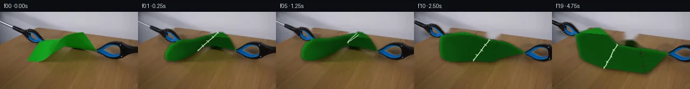

![首帧]()

Round 00
2026-11-05T23:52:35.776399+00:00像素候选变化代码 +439/−0inspection 更新
pixels 975654ef3bccce8d · code cf7e96d74e2a9f13
查看本轮 generate.py 真实 diff
--- previous/generate.py
+++ current/generate.py
@@ -0,0 +1,439 @@
+"""PixelWorld vision-input generator — case_0045.
+
+Two blue-black grabber tools pull a green paper strip from opposite corners
+until it tears. Local numpy/PIL/OpenCV pixel synthesis only; frame 00 is the
+untouched first_frame.png. See OBSERVATION.md / METHOD.md.
+"""
+from pathlib import Path
+import math
+import numpy as np
+import cv2
+from PIL import Image
+from artifact_io import save as artifact_save
+
+WS = Path(__file__).parent
+F0 = np.array(Image.open(WS / "first_frame.png").convert("RGB"))
+H, W = F0.shape[:2]
+assert (H, W) == (144, 256)
+
+rng_global = np.random.default_rng(20240607)
+
+# ---------------------------------------------------------------- masks ----
+R = F0[:, :, 0].astype(int)
+G = F0[:, :, 1].astype(int)
+B = F0[:, :, 2].astype(int)
+
+green_thr = ((G > 90) & (G > R + 25) & (G > B + 25)).astype(np.uint8)
+green_thr = cv2.morphologyEx(green_thr, cv2.MORPH_CLOSE, np.ones((3, 3), np.uint8))
+cnts, _ = cv2.findContours(green_thr, cv2.RETR_EXTERNAL, cv2.CHAIN_APPROX_NONE)
+cnt = max(cnts, key=cv2.contourArea)
+paper_sil = np.zeros((H, W), np.uint8)
+cv2.drawContours(paper_sil, [cnt], -1, 1, -1) # filled silhouette incl. dark fold
+
+blue = ((B > 100) & (B > R + 30) & (B > G + 15))
+dark = ((R < 72) & (G < 72) & (B < 80))
+
+# --- left grabber (head + silver shaft running up-left off frame) ---
+left_mask = np.zeros((H, W), np.uint8)
+# head / sleeve region
+headL_rect = np.zeros((H, W), bool)
+headL_rect[26:64, 22:90] = True
+left_mask[headL_rect & (dark | blue)] = 1
+# shaft: geometric band, metallic/dark colours only (wall is light bluish)
+yy, xx = np.mgrid[0:H, 0:W]
+A = np.array([-8.0, 10.0])
+P1 = np.array([60.0, 43.5])
+d = P1 - A
+t = ((xx - A[0]) * d[0] + (yy - A[1]) * d[1]) / (d @ d)
+t = np.clip(t, 0, 1)
+projx = A[0] + t * d[0]
+projy = A[1] + t * d[1]
+dist = np.hypot(xx - projx, yy - projy)
+shaft_col = ((R < 80) | ((R < 150) & ~((R > 110) & (B > R + 8))))
+left_mask[(dist <= 3.6) & shaft_col] = 1
+left_mask = cv2.morphologyEx(left_mask, cv2.MORPH_CLOSE, np.ones((3, 3), np.uint8))
+left_mask = cv2.dilate(left_mask, np.ones((3, 3), np.uint8), iterations=1)
+
+# --- right grabber (head + handle to the right edge) ---
+right_rect = np.zeros((H, W), bool)
+right_rect[50:93, 174:256] = True
+right_mask = np.zeros((H, W), np.uint8)
+right_mask[right_rect & (dark | blue)] = 1
+right_mask = cv2.morphologyEx(right_mask, cv2.MORPH_CLOSE, np.ones((3, 3), np.uint8))
+right_mask = cv2.dilate(right_mask, np.ones((3, 3), np.uint8), iterations=1)
+
+# -------------------------------------------------------- background ------
+remove = cv2.dilate((paper_sil | left_mask | right_mask).astype(np.uint8),
+ np.ones((5, 5), np.uint8), iterations=1)
+bg = cv2.inpaint(F0, remove, 4, cv2.INPAINT_TELEA)
+# restore wood grain statistics in the inpainted table region
+yn, xn = np.mgrid[0:H, 0:W]
+table_side = yn > (34 + 0.09 * (xn - 30))
+zone = (remove.astype(bool) & table_side)
+low = cv2.resize(rng_global.normal(0, 1, (H // 8, W // 8)).astype(np.float32), (W, H))
+low = cv2.GaussianBlur(low, (0, 0), 2.2)
+fine = rng_global.normal(0, 1, (H, W))
+noise = (low * 4.5 + fine * 2.4)
+for c, sc in enumerate((1.25, 0.95, 0.7)):
+ bg[:, :, c] = np.clip(bg[:, :, c] + zone * noise * sc, 0, 255)
+bg = bg.astype(np.uint8)
+
+# ------------------------------------------------------- sprite RGBA ------
+def make_sprite(mask):
+ alpha = cv2.GaussianBlur((mask * 255).astype(np.uint8), (0, 0), 1.1)
+ return np.dstack([F0, alpha])
+
+spriteL0 = make_sprite(left_mask)
+spriteR0 = make_sprite(right_mask)
… diff truncated; 352 more lines …